Geert Lovink's Books
By: Geert Lovink and Ned Rossiter Organized networks are an alternative to the social media logic of weak links and their secretive economy of data mining. They put an end to freestyle friends, seeking forms of empowerment beyond the brief moment of joyful networking. This speculative manual calls for nothing less than social technologies based [...] |Publications
Order INC Publications
INC publication series include essay collections, commissioned writings on the intersection of research, art, and activism, and theoretical works with an international scope. Experiments are done with multiple formats such as print, ePub, PDF, etc. keeping quality standards in content and design high at all times. The INC produces and distributes books in-house, which allows publishing of state-of-the-art research in a fast yet personal way. Most publications are open access and available for free for everyone interested. Order INC publications
Studies in Network Cultures is a series produced in collaboration with nai010 publishers. The books investigate concepts and practices specific to the shifting environment of network cultures.
INC Readers give an overview of the present day research, critique, and artistic practices in a thematic research field at once broad and limited. The set up is multidisciplinary, with academic (humanities, social sciences, software studies etc.), artistic, and activist contributors.
Network Notebooks present new media research commissioned by the INC, giving researchers and other potential authors the chance to write a lengthy essay one the topic of their interest, as a (preliminary) conclusion of previous research work and/or laying the ground works for a future research project.
Theory on Demand presents an ‘archive of content production’ available in print-on-demand. The series includes reprints of theoretical new media work, for example dissertations or books that have gone out of stock, but also new work that’s unfit for traditional publishers.
Conference reports collect all blog posts and results from an INC event.
Zero Infinite is the INC podcast series.
EPUB, Theory on Demand
Author: Trine Bjørkmann Berry. Videoblogging Before YouTube offers a cultural history of online video, focusing on the critical moment when the internet moved from being a mostly textual medium to a truly multimedia one. |
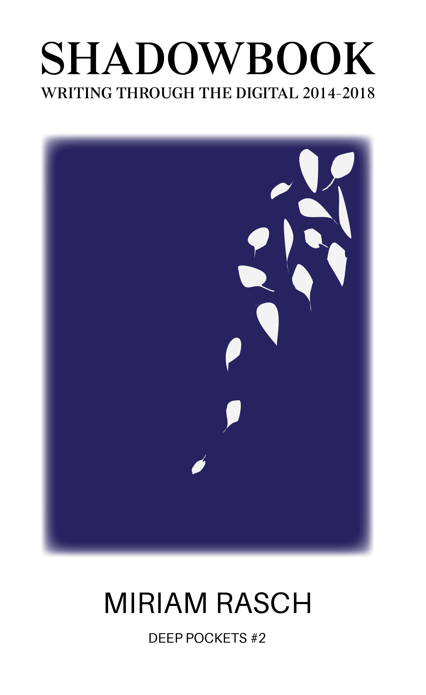
Deep Pockets, EPUB
Deep Pockets #2: Shadowbook: Writing Through the Digital 2014-2018
Author: Miriam Rasch. What happens to our everyday language in the digital sphere? How does ‘the post-digital condition’ change the world in which we think about ourselves and talk to one another? |
EPUB, Theory on Demand
TOD #26: On Editorialization: Structuring Space and Authority in the Digital Age
Author: Marcello Vitali-Rosati. Digital space is well-structured and material and has specific forms of authority. Editorialization is one key process that organizes this space and thus brings into being digital authority. |
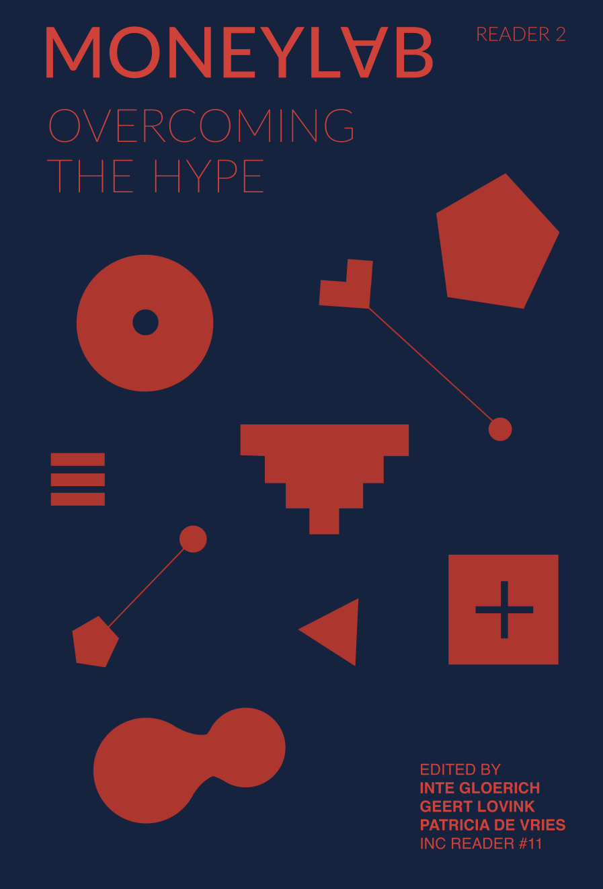
EPUB, INC Reader
Inte Gloerich, Geert Lovink, Patricia de Vries (eds), MoneyLab Reader 2: Overcoming the Hype, Amsterdam: Institute of Network Cultures, 2018. ISBN: 978-94-92302-19-9. |EPUB, Theory on Demand
Author: Alex Foti. From the fast-food industry to the sharing economy, precarious work has become the norm in contemporary capitalism, like the anti-globalization movement predicted it would. |Zero Infinite Podcast
Following the conference Fear and Loathing of the Online Self and the publication of Culture of the Selfie: Self-Representation in Contemporary Visual Culture in May 2017, this episode of INC’s Zero Infinite podcast zooms in on the online self and selfies, with Ana Peraica, Wendy Chun and Rebecca Stein. In the studio, Inte Gloerich, Leonieke [...] |
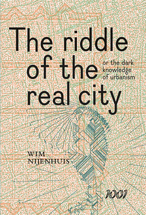
EPUB, Miscellanea
The Riddle of the Real City or the Dark Knowledge of Urbanism
Author: Wim Nijenhuis. Translated from the Dutch by Laura Vroomen & Nina Woodson. Design & development: OSP (Gijs de Heij, Ludi Loiseau & Sarah Magnan). Publisher: Uitgeverij Duizend & Een / 1001 Publishers and Institute of Network Cultures. Amsterdam 2017. ISBN: 9789071346460 (print) / 9789071346477 (epub). |
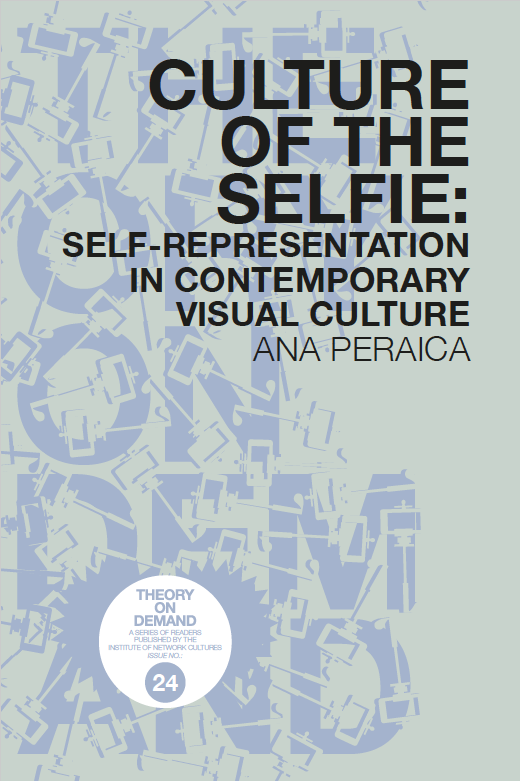
EPUB, Theory on Demand
TOD #24: Culture of the Selfie: Self-Representation in Contemporary Visual Culture
Author: Ana Peraica. This book focuses on space in self-portraits, shared between the person self-portraying and the viewer. What is the missing information of the transparent relationship to the self and what kind of world appears behind each selfie? [...] |Zero Infinite Podcast
Listen to the third episode of the podcast of the Institute of Network Cultures, in which Miriam Rasch and Geert Lovink discuss the politics of the database with Kenneth Werbin and Nikos Voyiatzis, zooming in on the power of listing technologies and the need to crack open the list. Want to know more? Check out [...] |
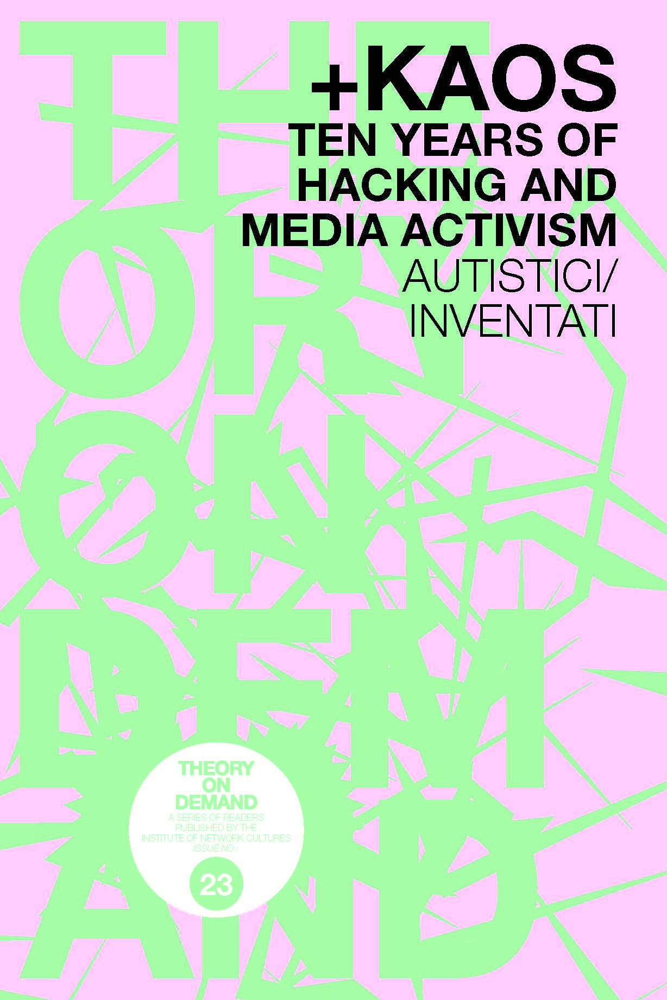
EPUB, Theory on Demand
Authors Autistici/Inventati, or simply A/I, was funded in 2001 with the goal of creating an autonomous server and providing free web services which respected users' privacy and anonymity. Having grown into a distributed network spread over several countries, [...] |
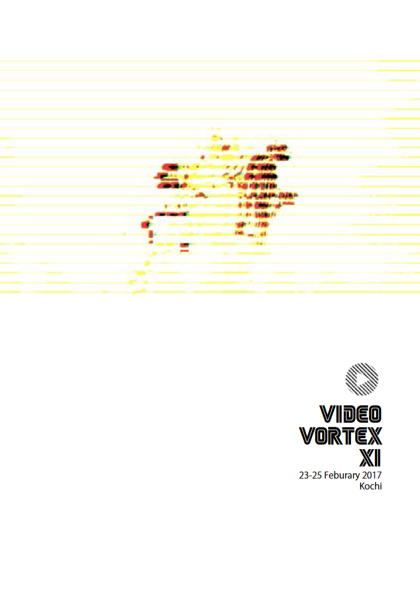
Conference Report
23 – 26 February 2017, Kochi, India. Download the conference report here. Video technology has radically altered the ways in which we produce, consume and circulate images, influencing the aesthetics and possibilities of moving image cultures, as well as yielding a rich body of scholarship across various disciplines. Given its ease of access and use, [...] |Zero Infinite Podcast
About the podcast: Although digital technologies promised a renaissance in the publishing industries, publishers still struggle with digital innovations and try to hold on to traditional workflows, production, form and business models. How can we open-up this top-down mode of communication? In this episode we discuss the future of (digital) publishing through interviews with Janneke Adema, Michael Dieter, Morehshin Allahyari and Daniel Rourke. [...] |EPUB, Miscellanea
Filorete Flock: A New Form of Network in an Emergent Democracy
By Isabel De Maurrisens. This essay is based on research promoted by INDIRE, Italian National Institute for Documentation, Innovation and Educational Research in Education, and is developed under the research on ‘Professional networks, Educational models and School principal’s profile in Italy’. |EPUB, Theory on Demand
Author: Kenneth C. Werbin. Preface by: Geert Lovink. Edited By: Miriam Rasch. EPUB development: Leonieke van Dipten. Inspired by taxonomist Jack Goody’s theorizing of ‘ancient lists’ as ‘intellectual technologies’, this book analyzes listing practices in modern and contemporary formations of power, and how they operate in the installation and securing of the milieus of circulation that characterize Michel Foucault’s conception of governmentality. Propelling the list’s role [...] |Zero Infinite Podcast
About the podcast: What does it mean to be precarious, and who self-identifies as part of the precariat? Is it a political position? And if so, how can precariats start to organize themselves? In this first episode of the Zero Infinite podcast we discuss precarity, anti-austerity and work through interviews with Alex Foti, Baruch Gottlieb [...] |Conference Report
MoneyLab #3 Failing Better. A two day symposium of talks, workshops, performances and parties that conquer the assumption that anything is too big to fail. 1-2 December 2016, Amsterdam. The aim of MoneyLab is to research, map and probe (alternative) strategies of redistribution and intervention in digital economy. It starts with the conviction that after [...] |
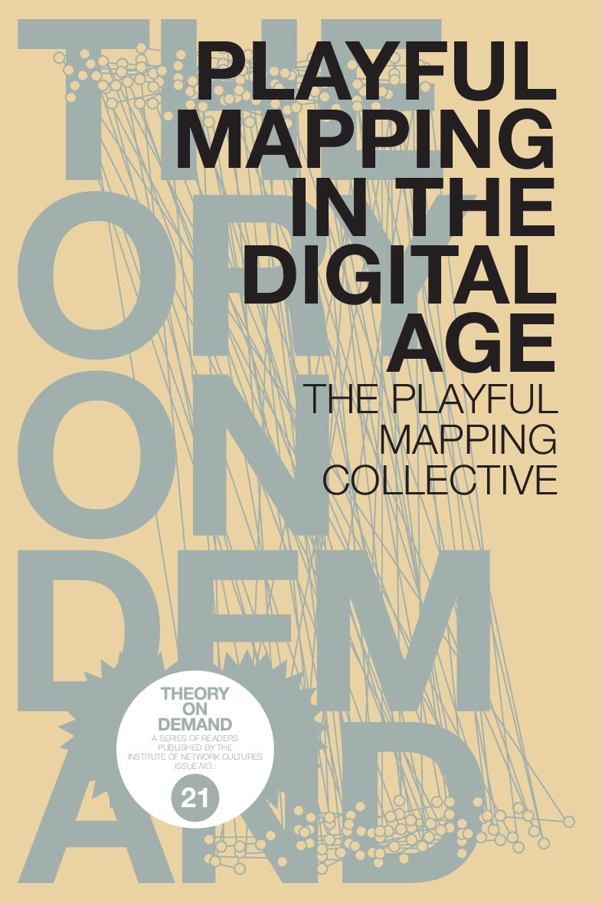
EPUB, Theory on Demand
About the book: From Mah-Jong, to the introduction of Prussian war-games, through to the emergence of location-based play: maps and play share a long and diverse history. This monograph shows how mapping and playing unfold in the digital age, when the relations between these apparently separate tropes are increasingly woven together. Fluid networks of interaction [...] |Miscellanea
The 3D Additivist Cookbook, devised and edited by Morehshin Allahyari and Daniel Rourke, is a compendium of imaginative, provocative works from over 100 world-leading artists, activists and theorists. The 3D Additivist Cookbook contains 3D .obj and .stl files, critical texts, templates, recipes, (im)practical designs and methodologies for living in this most contradictory of times. In [...] |
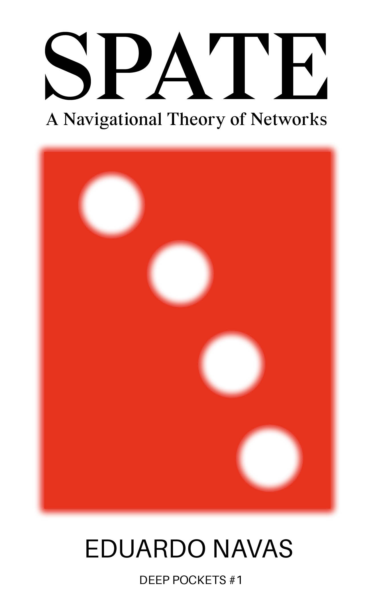
Deep Pockets, EPUB
About the book: The relation of your handwriting and typing exposes the contention of efficiency in a world driven by the ever-increasing compression of all things. Fake wood is more natural than an honest answer: lying reaffirms the truth based on negation only to move into a grey area. You are not excited? The potential of [...] |EPUB, Theory on Demand
TOD #20: The New Aesthetic and Art: Constellations of the Postdigital
About the book: The New Aesthetic and Art: Constellations of the Postdigital is an interdisciplinary analysis focusing on new digital phenomena at the intersections of theory and contemporary art. Asserting the unique character of New Aesthetic objects, Contreras-Koterbay and Mirocha trace the origins of the New Aesthetic in visual arts, design, and software, find its [...] |
EPUB, Network Notebooks
Network Notebook #11: The Ends of the Internet, Boris Beaude
Author: Boris Beaude. Translated by: Patrice Riemens. Copy editor: Matt Beros. Network Notebook editors: Geert Lovink and Miriam Rasch. Design: Loes Sikkes, Rotterdam. EPUB development: André Castro. Printer: Printvisie. Publisher: Institute of Network Cultures, Amsterdam 2016. ISBN: 9789492302052. |EPUB, Theory on Demand
TOD #19: Internet on the Outstation: The Digital Divide and Remote Aboriginal Communities
Authors: Ellie Rennie, Eleanor Hogan, Robin Gregory, Andrew Crouch, Alyson Wright and Julian Thomas. Internet on the Outstation provides a new take on the digital divide. Why do whole communities choose to go without the internet when the infrastructure for access is in place? Through an in-depth exploration of the digital practices occurring in Aboriginal households in remote central Australia, the authors address both the dynamics of internet adoption and the benefits that flow from its use. Published June 2016. |Geert Lovink's Books
Social Media Abyss: Critical Internet Cultures and the Force of Negation
In this fifth volume of his ongoing investigations, Dutch media theorist and internet critic Geert Lovink plunges into the paradoxical condition of the new digital normal versus a lived state of emergency. There is a heightened, post-Snowden awareness; we know we are under surveillance but we click, share, rank and remix with a perverse indifference [...] |
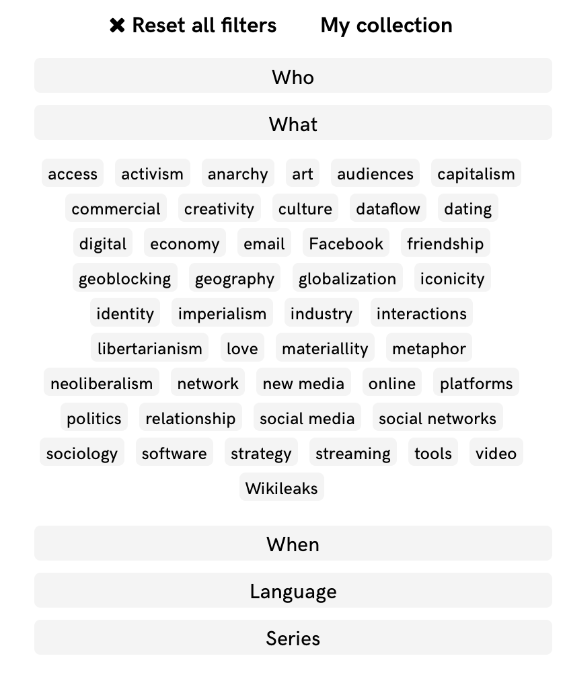
Theory on Demand
The Navigating Theory on Demand project aims to find a new way of interacting with the publications and their content, by breaking away from the limitations of print and ebook. Try it out! |
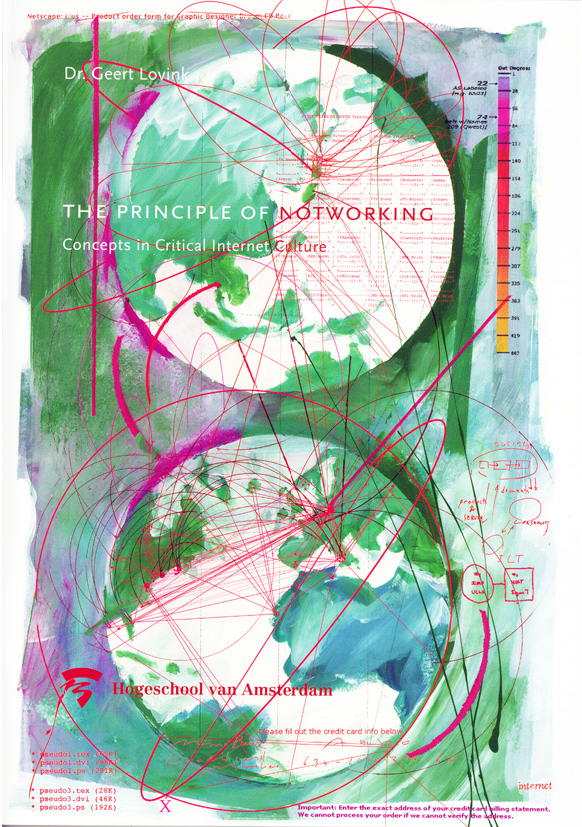
Geert Lovink's Books, Miscellanea, publications
Author: Geert Lovink. Cover Design: Marise Knegtmans. Publisher: HvA Publicaties, Amsterdam, 2005. ISBN: 90 5629 380 x. |
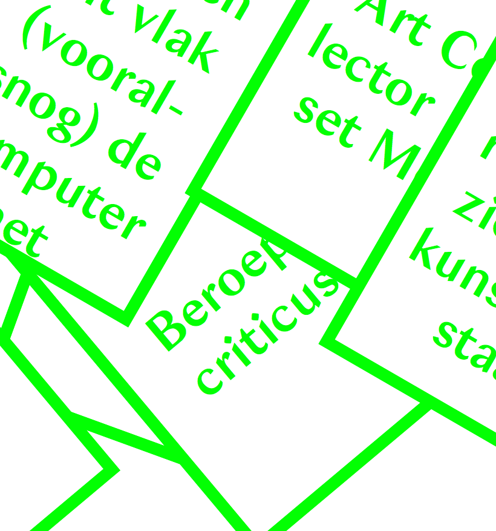
Miscellanea
Utopia van de kunstkritiek is een uitgave van het Domein voor Kunstkritiek, Instituut voor Netwerkcultuur en PublishingLab, Hogeschool van Amsterdam, maart 2016. |
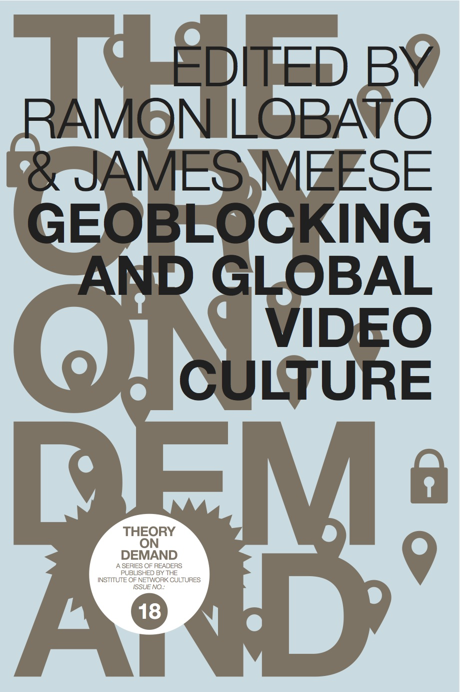
EPUB, Theory on Demand
Editors: Ramon Lobato and James Meese. Copy-editing: Leonieke van Dipten. Editorial support: Miriam Rasch. Cover Design: Katja van Stiphout. DTP: Leonieke van Dipten. EPUB development: Leonieke van Dipten Infographics: Sandra Hanchard. Printer: Print on Demand. Publisher: Institute of Network Cultures, Amsterdam, 2016. ISBN: 978-94-92302-03-8. |Conference Report
MoneyLab #2 Economies of Dissent. A two day symposium of talks, workshops, performances and parties that conquer the assumption that anything is too big to fail. 3-4 December 2015, Amsterdam. An overview of the video registration of MoneyLab#2: Economies of Dissent is available here, and the photos can be found here. The blogposts about each session [...] |.jpg)
EPUB, Theory on Demand
About this publication: What is the correlation among the creative industries, creative industry policies, new media paradigms and capitalism as colonial relations of dominance? What is the role of these industries in the prioritization of the interests of capital at the expense of those of society and how can these paradigms be criticized in the [...] |
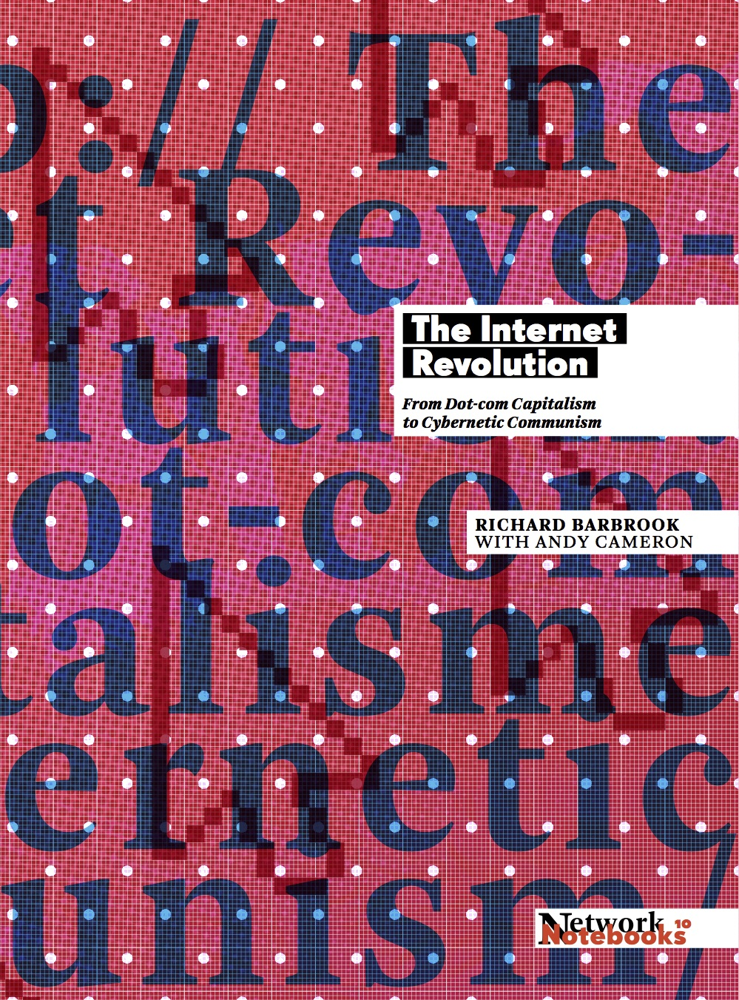
EPUB, Network Notebooks
Author: Richard Barbrook with Andy Cameron. Network Notebook editors: Geert Lovink and Miriam Rasch. Design: Medamo, Rotterdam. EPUB development: André Castro. Printer: Printvisie. Publisher: Institute of Network Cultures, Amsterdam 2015. ISBN: 978-94-92302-02-1. |EPUB, Theory on Demand
TOD #16: Online Courtship – Interpersonal Interactions Across Borders
Editors: I. Alev Degim, James Johnson & Tao Fu. Copy-editing and design: Jess van Zyl. Printer: ‘Print on Demand’. Publisher: Institute of Network Cultures, Amsterdam 2015. ISBN: 978-90-822345-7-2. |EPUB, Theory on Demand
TOD #15: In the Facebook Aquarium: The Resistible Rise of Anarcho-Capitalism, Ippolita
Author: Ippolita. Design: Katja van Stiphout. Copy-editing: Matt Beros. Printer: ‘Print on Demand’. Publisher: Institute of Network Cultures, Amsterdam 2015. ISBN: 978-94-92302-00-7 |
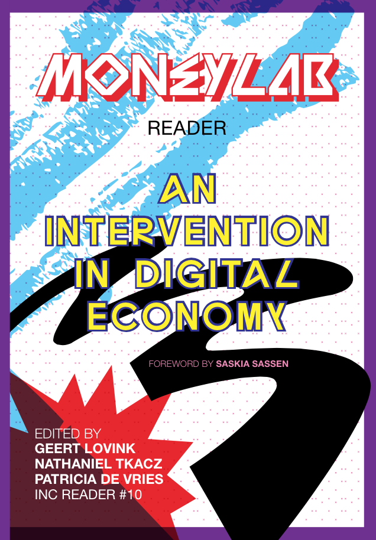
EPUB, INC Reader
Geert Lovink, Nathaniel Tkacz, and Patricia de Vries (eds), MoneyLab Reader: An Intervention in Digital Economy, Amsterdam: Institute of Network Cultures, 2015. ISBN: 978-90-822345-5-8. |
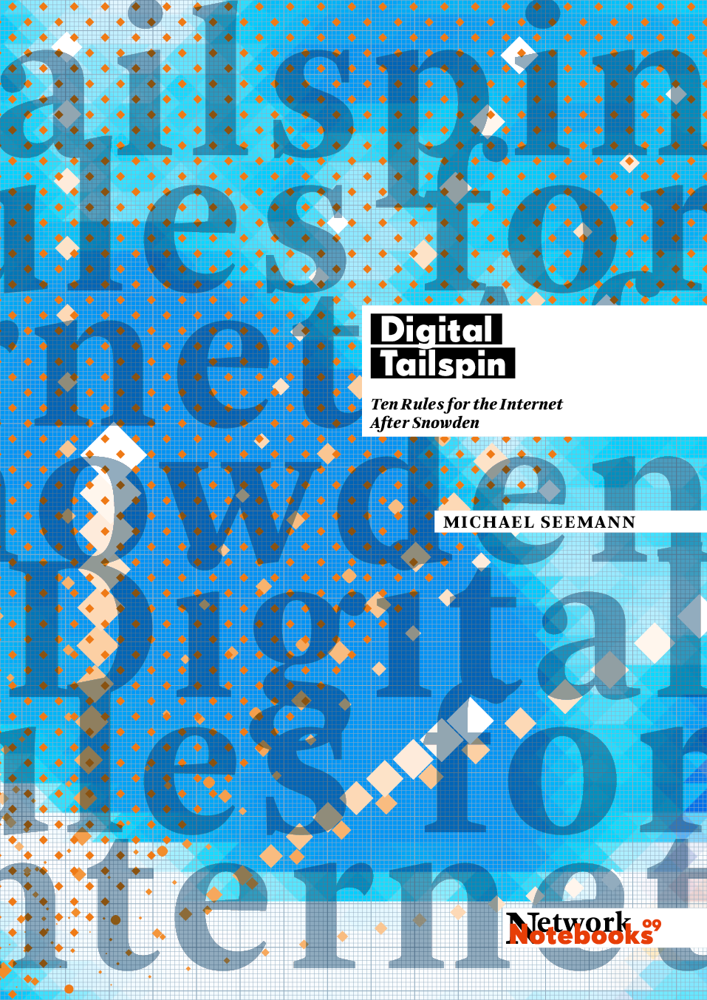
EPUB, Network Notebooks
Network Notebook #09: Digital Tailspin: Ten Rules for the Internet After Snowden, Michael Seemann
Michael Seemann, Digital Tailspin: Ten Rules for the Internet After Snowden. Network Notebooks 09, Institute of Network Cultures, Amsterdam, 2015. ISBN 978-90-822345-8-9. |
EPUB, Miscellanea
Digital Publishing Toolkit: the Blog Posts is a collection of all the blog posts of the Digital Publishing Toolkit blog. This EPUB consists of texts, images and links to video files. It includes reflections, reports and tools. The blog posts are arranged in reverse chronological order, with the exception of the earliest post, as we thought it would be most appropriate to begin the collection with the original first post |
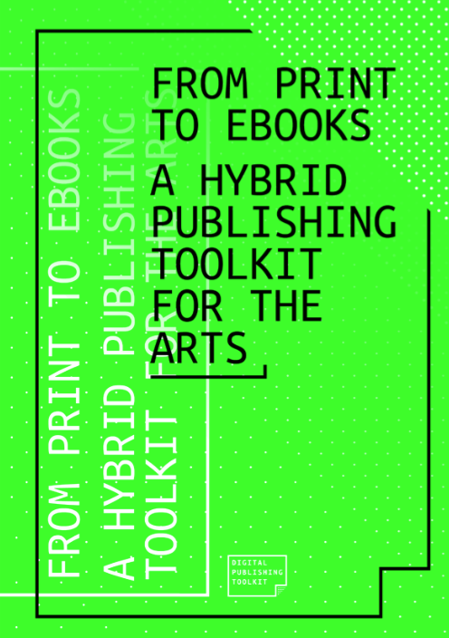
EPUB, Miscellanea
From Print to Ebooks: a Hybrid Publishing Toolkit for the Arts
This Toolkit is meant for everyone working in art and design publishing. No specific expertise of digital technology, or indeed traditional publishing technology, is required. The Toolkit provides hands-on practical advice and tools, focusing on working solutions for low-budget, small-edition publishing. |
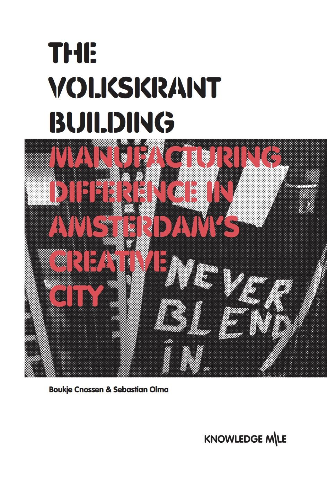
EPUB, Miscellanea
Boukje Cnossen and Sebastian Olma, The Volkskrant Building: Manufacturing Difference in Amsterdam's Creative City. ISBN 978-94-92171-00-9 (print), ISBN 978-94-92171-01-6 (epub). Publisher: Amsterdam Creative Industries Publishing. |
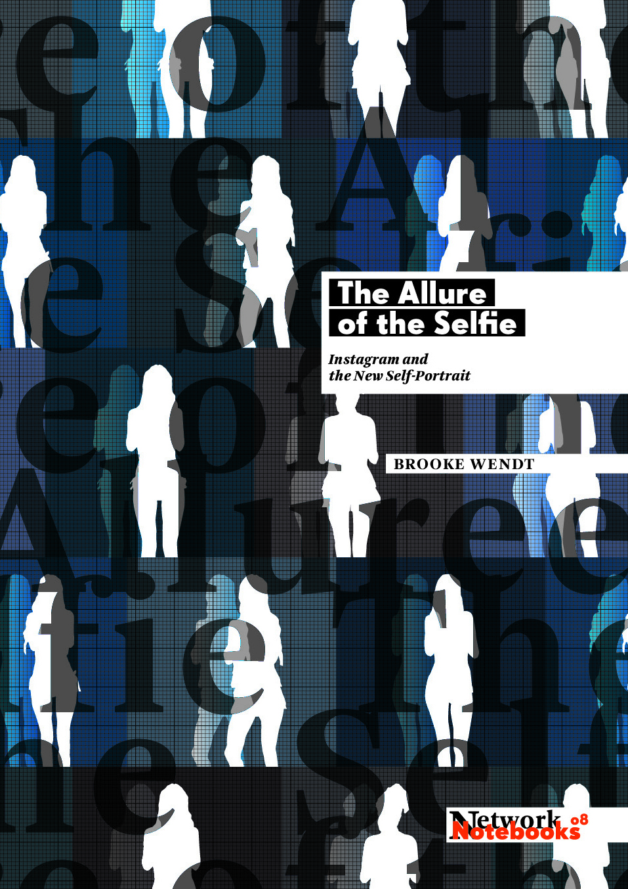
EPUB, Network Notebooks
Network Notebook #08: The Allure of the Selfie: Instagram and the New Self Portrait, Brooke Wendt
Brooke Wendt, The Allure of the Selfie: Instagram and the New Self Portrait. Network Notebooks 08, Institute of Network Cultures, Amsterdam, 2014. ISBN 978-90-822345-1-0. |
EPUB, Network Notebooks
Network Notebook #07: Radical Tactics of the Offline Library, Henry Warwick
Henry Warwick, Radical Tactics of the Offline Library. Network Notebooks 07, Institute of Network Cultures, Amsterdam, 2014. ISBN 978-90-818575-9-8. |
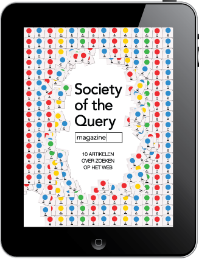
Miscellanea
Society of the Query Magazine offer 10 articles in Dutch on web search and search engines, adapted especially for educational purposes. | Download PDF
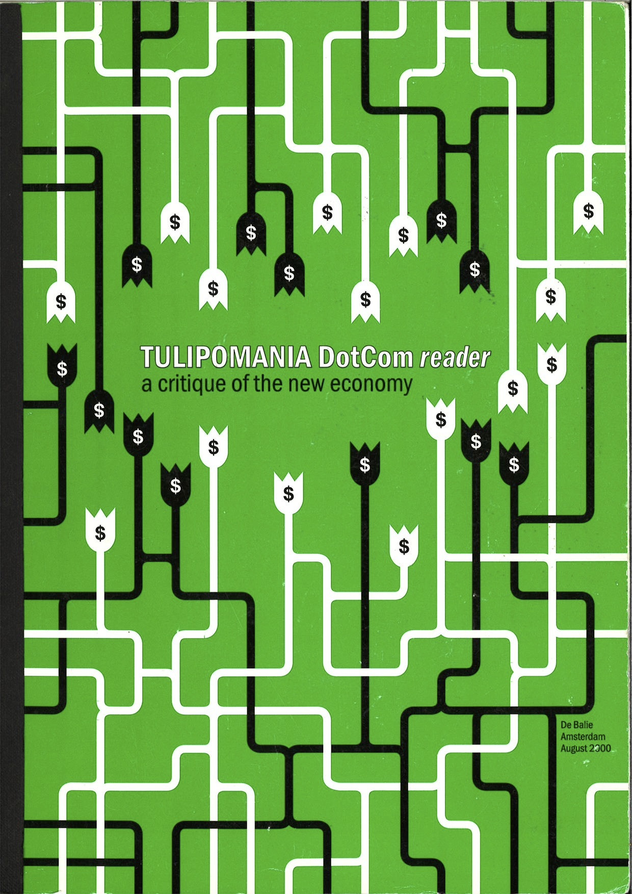
Miscellanea
In times of rapid growth of new media as an economic factor, the danger of creating a stagnating cultural ghetto is immediate. The aim of Tulipomania was not to express “Schadensfreude” towards all those who gambled – and lost, nor to mobilize resentment towards the steadily growing number of Internet millionaires. The conference was neither [...] | Download PDF
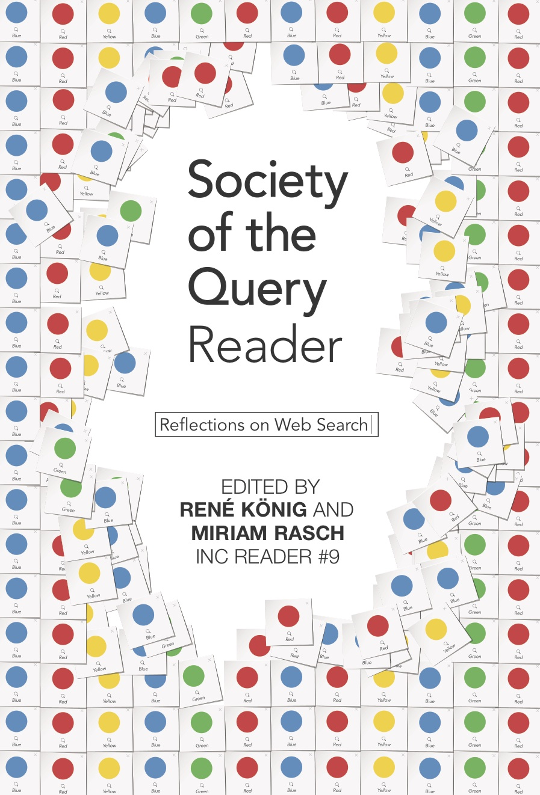
EPUB, INC Reader
René König and Miriam Rasch (eds), Society of the Query Reader: Reflections on Web Search, Amsterdam: Institute of Network Cultures, 2014. ISBN: 978-90-818575-8-1, paperback, 292 pages. |Conference Report
MoneyLab: Coining Alternatives 2014 conference report
MoneyLab: Coining Alternatives videos and blog reports are now online! If you missed out on this year’s conference or would like to experience it again, be sure to check out the reports, photos and videos of the speakers on the MoneyLab page. MoneyLab: Coining Alternatives, an initiative of the Institute of Network Cultures, Hogeschool van [...] | Download PDF
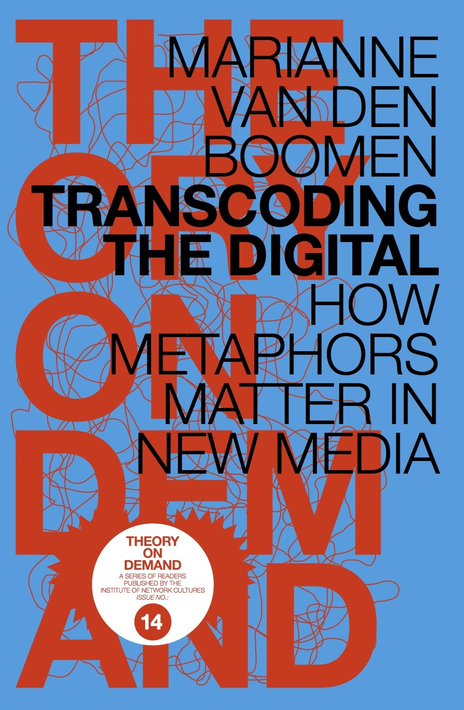
Theory on Demand
TOD #14: Transcoding the Digital: How Metaphors Matter in New Media, Marianne van den Boomen
colophon Author: Marianne van den Boomen. Editorial support: Miriam Rasch. Design and DTP: Katja van Stiphout. Printer: ‘Print on Demand’. Publisher: Institute of Network Cultures, Amsterdam 2014. ISBN: 978-90-818575-7-4 |Theory on Demand
TOD #13: The Dark Side of Google, Ippolita
Author: Ippolita. Editorial support: Miriam Rasch. Design: Katja van Stiphout. DTP: Margreet Riphagen & Katja van Stiphout. Printer: ‘Print on Demand’. Publisher: Institute of Network Cultures, Amsterdam 2013. ISBN: 978-90-818575-6-7 | Download PDFStudies in Network Cultures
Anti-Media: Ephemera on Speculative Arts, Florian Cramer
Florian Cramer, Anti-Media, Ephemera on Speculative Arts, nai010 Publishers, Rotterdam, Willem de Kooning Academy and Institute of Network Cultures, Amsterdam, 2013. ISBN 978-94-62080-31-7. | Buy the book
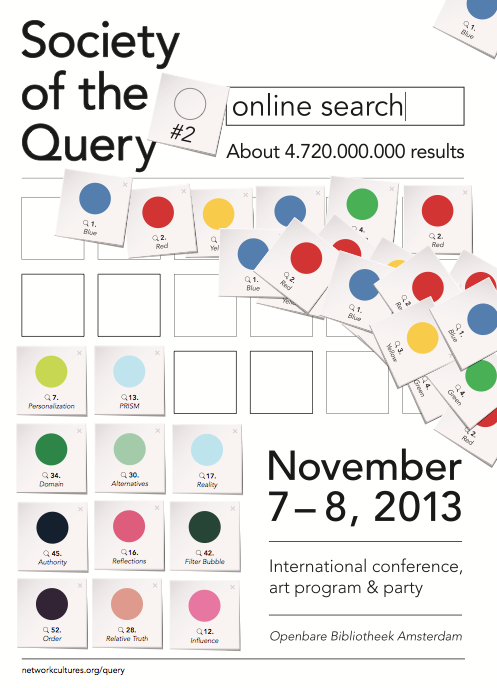
Conference Report
The Society of the Query #2 conference report offers an overview of the conference held November 7-8 2013 in Amsterdam. The file functions both as a summary and as archive of the project. It consists of the key results, the conference program, all conference blogposts and many other (research) blogposts concerning the topic of ‘online search [...] |EPUB, INC Reader
Unlike Us Reader: Social Media Monopolies and Their Alternatives
Geert Lovink and Miriam Rasch (eds), Unlike Us Reader: Social Media Monopolies and Their Alternatives, Amsterdam: Institute of Network Cultures, 2013. ISBN: 978-90-818575-2-9, paperback, 384 pages. |
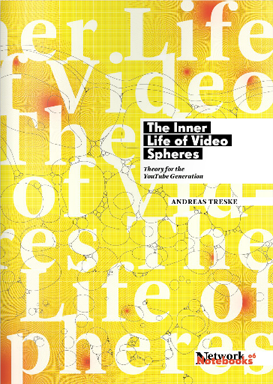
Network Notebooks
Network Notebook #06: The Inner Life of Video Spheres, Andreas Treske
Andreas Treske, The Inner Life of Video Spheres. Network Notebooks 06, Institute of Network Cultures, Amsterdam, 2013. ISBN: 978-90-818575-3-6 | Download PDFMiscellanea
Unlike Us App. Lespakket ontwikkeld door het lectoraat Netwerkcultuur, CREATE-IT applied research, Hogeschool van Amsterdam |Conference Report
Unlike Us #3 conference report
Unpublished document. Edited by Serena Westra and Stijn Peeters. | Download PDF
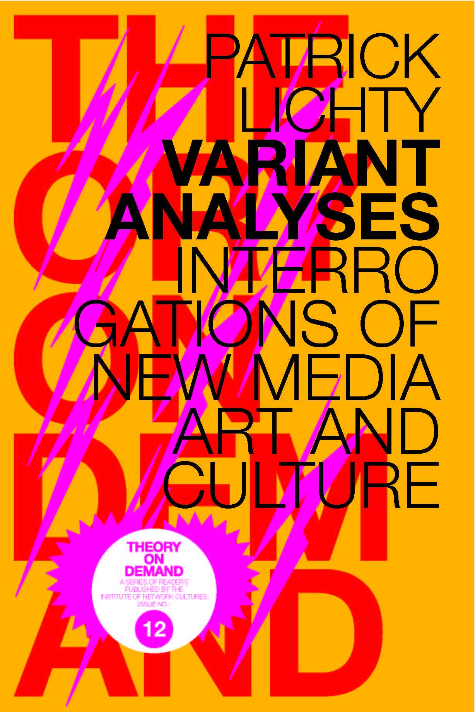
Theory on Demand
TOD #12: Variant Analyses, Interrogations of New Media Art and Culture, Patrick Lichty
Author: Patrick Lichty. Editorial support: Morgan Currie. Design: Katja van Stiphout. DTP: Margreet Riphagen & Katja van Stiphout. Printer: ‘Print on Demand’. Publisher: Institute of Network Cultures, Amsterdam 2013. ISBN: 978-90-818575-4-3 | Download PDF
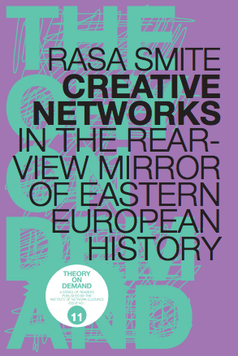
Theory on Demand
TOD #11: Creative Networks, in the Rearview Mirror of Eastern European History, Rasa Smite
Author: Rasa Smite. Translation (in English): Linda Vebere. Copy editing: Miriam Rasch. Publisher: Institute of Network Cultures, Amsterdam 2012. ISBN: 978-90-818575-0-5. | Download PDF
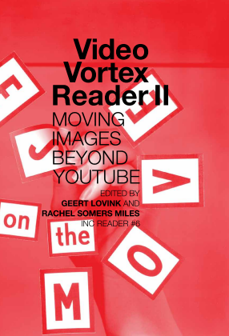
INC Reader
Video Vortex Reader II: Moving Images Beyond YouTube
ideo Vortex Reader II: moving images beyond YouTube, Amsterdam: Institute of Network Cultures, 2011. ISBN: 978-90-78146-12-4, paperback, 378 pages. | Download PDF
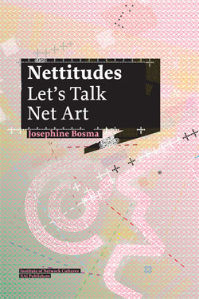
Studies in Network Cultures
Nettitudes – Let’s Talk Net Art, Josephine Bosma
Josephine Bosma, Nettitudes: Let's Talk Net Art, NAi Publishers, Rotterdam and the Institute of Network Cultures, Amsterdam, 2011. ISBN 978-90-5662-800-0. | Buy the bookConference Report
The Unbound Book conference report
The Unbound Book Conference Report. Amsterdam: Institute of Network Cultures, 2011. 57 p. | Download PDFConference Report
Unlike Us #2 conference report
Conference report. Edited by Magreet Riphagen and Serena Westra. | Download PDF
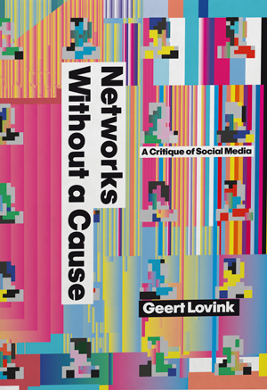
Geert Lovink's Books
Networks Without a Cause, Geert Lovink
Geert Lovink, Networks Without a Cause: A critique of Social Media: Cambridge, Polity Press, 2011. ISBN: 9780745649672. | Buy the book
Geert Lovink's Books
Das halbwegs Soziale: Eine Kritik der Vernetzungskultur by Geert Lovink
Geert Lovink, Networks Without a Cause: A critique of Social Media: Cambridge, Polity Press, 2011. ISBN: 9780745649672 | Buy the bookNetwork Notebooks
Network Notebook #05: Legacies of Tactical Media, Eric Kluitenberg
Eric Kluitenberg, Legacies of Tactical Media. Network Notebooks 05, Institute of Network Cultures, Amsterdam, 2011. ISBN/EAN 978-90-816021-8-1. | Download PDF
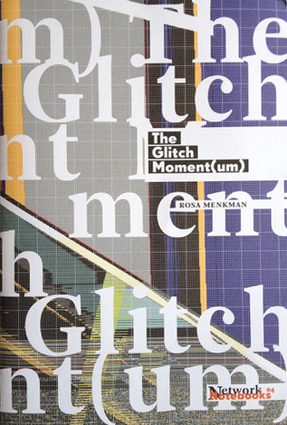
Network Notebooks
Network Notebook #04: The Glitch Moment(um), Rosa Menkman
Rosa Menkman, The Glitch Moment(um). Network Notebooks 04, Institute of Network Cultures, Amsterdam, 2011. ISBN: 978-90-816021-6-7. | Download PDFTheory on Demand
TOD #10: Beyond ICT4D: New Media Research in Uganda
Authors: Ali Balunywa , Guido van Diepen, Wouter Dijkstra, Kai Henriquez and Ben White. Editor: Geert Lovink Copy editing: Cindy Jeffers, Lily Antflick and Morgan Currie. Publisher: Institute of Network Cultures, Amsterdam 2011. ISBN: 978-90-816021-9-8. | Download PDFINC Reader
Critical Point of View: A Wikipedia Reader
Geert Lovink and Nathaniel Tkacz (eds), Critical Point of View: A Wikpedia Reader, Amsterdam: Institute of Network Cultures, 2011. ISBN: 978-90-78146-13-1, paperback, 385 pages. | Download PDF
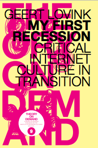
Theory on Demand
TOD #09: My First Recession, Critical Internet Culture In Transition, Geert Lovink
Edited by: Ned Rossiter. Publisher: Institute of Network Cultures, Amsterdam 2011. ISBN: 978-90-816021-7-4. | Download PDFTheory on Demand
TOD #08: Depletion Design: A Glossary of Network Ecologies
Editorial support: Carolin Wiedemann and Soenke Zehle Published in cooperation with xm:lab. Additional support by the Ministry of Education and Culture. Design: Katja van Stiphout. DTP: Margreet Riphagen. ISBN: 978-90-818575-1-2 | Download PDF
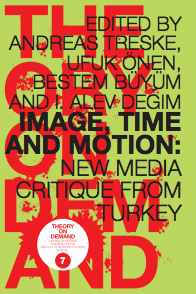
Theory on Demand
TOD #07: Image, Time and Motion: New Media Critique from Turkey
Edited by: Andreas Treske, Ufuk Onen, Bestem Büyüm and I. Alev Degim. Publisher: Institute of Network Cultures, Amsterdam 2011. ISBN: 978-90-816021-5-0. | Download PDFConference Report
Video Vortex #6 conference report
Conference Report VV6. Amsterdam: Institute of Network Cultures, June 2011. 85 p. | Download PDF
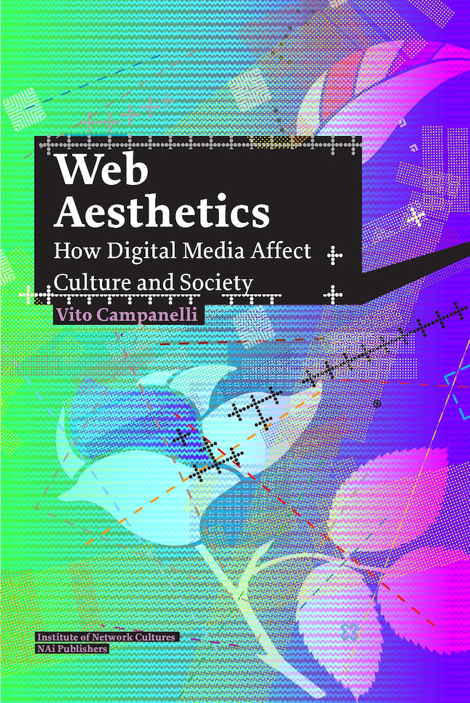
Studies in Network Cultures
Web Aesthetics, Vito Campanelli
Vito Campanelli, Web Aesthetics; How Digital Media Affect Culture and Society, NAi Publishers, Rotterdam and the Institute of Network Cultures, Amsterdam, 2010. ISBN 978-90-5662-770-6, Paperback, swen, 276 pages, Size: 14 x 21 cm. € 23.50 | Buy the bookConference Report
Economies of the Commons #2 conference report
Conference report Economies of the commons #2. Amsterdam: Institute of Network Cultures, 2010. 48 p. | Download PDFTheory on Demand
TOD #06: Gaming Rhythms: Play and Counterplay from the Situated to the Global, Tom Apperley
Author: Tom Apperley. Publisher: Institute of Network Cultures, Amsterdam 2010. ISBN: 978-90-816021-1-2. | Download PDF
Network Notebooks
Network Notebook #03: The Telekommunist Manifesto, Dmytri Kleiner
Dymtri Kleiner, The Telekommunist. Network Notebooks 03, Institute of Network Cultures, Amsterdam, 2010. ISBN: 978-90-816021-2-9. | Download PDFTheory on Demand
TOD #05: Spatial Aesthetics: Art, Place and the Everyday, Nikos Papastergiadis
Authors: Nikos Papastergiadis. Publisher: Institute of Network Cultures, Amsterdam 2010. ISBN: 978-90-816021-3-6. | Download PDFConference Report
Critical Point of View conference report
Critical Point of View conference report. Amsterdam: Institute of Network Cultures, 2010. 35 p. | Download PDFTheory on Demand
Authors: Joost Smiers and Marieke van Schijndel, Translation from Dutch: Rosalind Buck. Publisher: Institute of Network Cultures, Amsterdam 2009. ISBN: 978-90-78146-09-4. | Download PDFTheory on Demand
TOD #03: Victims’ Symptom (PTSD and Culture), Ana Peraica
Editor: Ana Peraica, Copy editing: Vicky Anning, Michael Dieter, Amsterdam, 2008. Publisher: Institute of Network Cultures, Amsterdam 2009. ISBN: 978-90-78146-11-7 | Download PDF
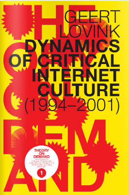
Theory on Demand
TOD #01: Dynamics of Critical Internet Culture by Geert Lovink
Author: Geert Lovink. Editorial support: Ned Rossiter. Publisher: Institute of Network Cultures, Amsterdam 2009. ISBN: 978-90-78146-07-0. | Download PDF{kind=link}
Theory on Demand
TOD #02: Jugendjahre der Netzkritik, Essays zu Web 1.0 (1995-1997), Geert Lovink & Pit Schultz
Authors: Geert Lovink and Pit Schultz, Editorial support: Andreas Kallfelzslation, Publisher: Institute of Network Cultures, Amsterdam 2010. ISBN: 978-90-816021-4-3. | Download PDF
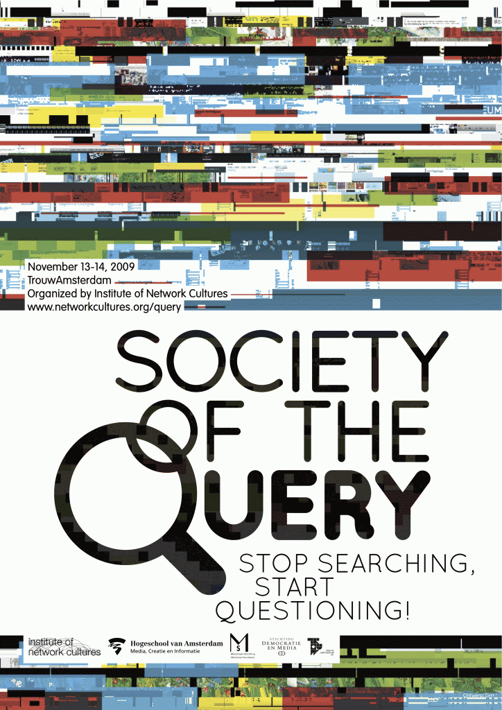
Conference Report
Society of the Query conference report
Society of the Query conference report. Amsterdam: Institute of Network Cultures, 2009. 51 p. | Download PDF
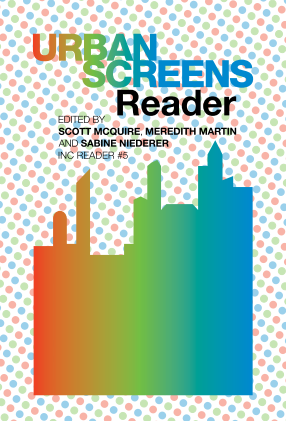
INC Reader
Scott McQuire, Meredith Martin and Sabine Niederer (eds.), Urban Screens Reader, Amsterdam: Institute of Network Cultures, 2009. ISBN: 978-90-78146-10-0. | Download PDF
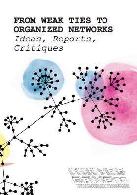
INC Reader
From Weak Ties to Organized Networks
From Weak Ties to Organized Networks, Ideas, Reports, Critiques, Amsterdam: Institute of Network Cultures, 2009. ISBN: 978-90-78146-08-7. | Download PDF
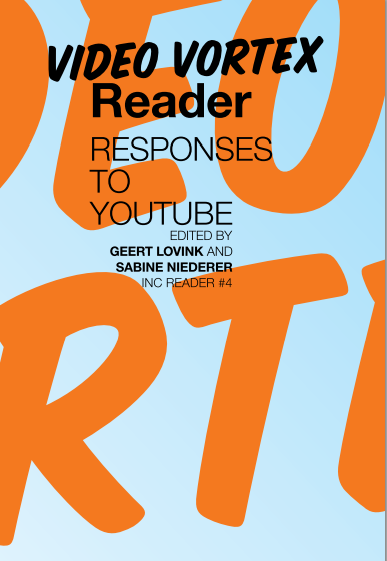
INC Reader
Geert Lovink and Sabine Niederer (eds.), Video Vortex Reader: Responses to YouTube, Amsterdam: Institute of Network Cultures, 2008. ISBN: 978-90-78146-05-6. | Download PDFINC Reader
MyCreativity Reader, Geert Lovink, Ned Rossiter
Geert Lovink and Ned Rossiter, MyCreativity Reader: A Critique of Creative Industries, Amsterdam: Institute of Network Cultures, 2008. ISBN 978-90-78146-04-9 | Download PDFStudies in Network Cultures
Animal Spirit, Matteo Pasquinelli
Matteo Pasquinelli, Animal Spirits: A Bestiary of the Commons, NAi Publishers, Rotterdam and the Institute of Network Cultures, Amsterdam, 2008. ISBN 978-90-5662-663-1. Paperback, sewn, 240 pages, Size: 16 X 23 cm. € 23.50 | Buy the book
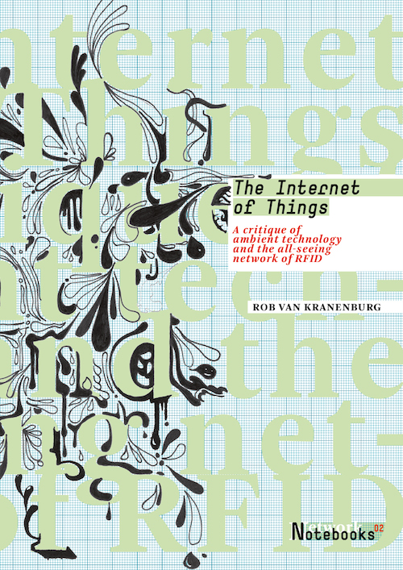
Network Notebooks
Network Notebook #02: The Internet of Things, Rob van Kranenburg
Rob van Kranenburg, The Internet of Things. A critique of ambient technology and the all-seeing network of RFID, Network Notebooks 02, Institute of Network Cultures, Amsterdam, 2007. ISBN: 978-90-78146-06-3. | Download PDF
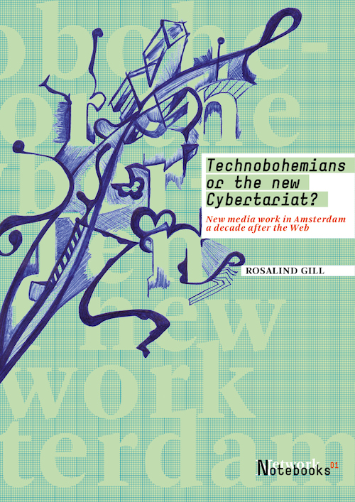
Network Notebooks
Network Notebook #01: Technobohemians or the new Cybertariat, Rosalind Gill
Rosalind Gill, Technobohemians or the new Cybertariat? New media work in Amsterdam a decade after the web, Network Notebooks 01, Institute of Network Cultures, Amsterdam, 2007. ISBN: 978-90-78146-02-5. | Download PDF
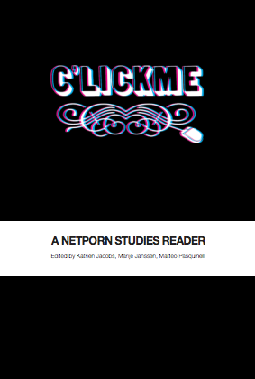
INC Reader
The Art and Politics of Netporn
C’Lick Me: A Netporn Studies Reader, Amsterdam: Institute of Network Cultures, 2007. ISBN: 978-90-78146-03-2. | Download PDFStudies in Network Cultures
Delusive Spaces, Eric Kluitenberg
Eric Kluitenberg, Delusive Spaces: Essays on Culture, Media and Technology, NAi Publishers, Rotterdam and the Institute of Network Cultures, Amsterdam, 2007. ISBN 978-90-5662-617-4. Paperback, sewn, 250 pages, Size: 16 X 23 cm. € 23.50 | Buy the book
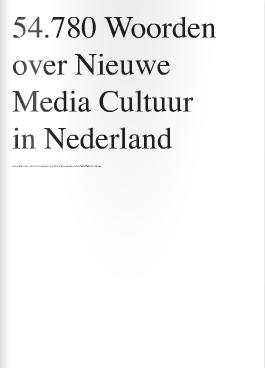
Miscellanea
54.780 Woorden over Nieuwe Media Cultuur in Nederland
Femke Sleegers en Theo Ploeg (eds.), 54.780 Woorden over Nieuwe Media Cultuur in Nederland, Instituut voor Netwerkcultuur i.s.m. het Sandberg Instituut, 2007. | Download PDFMiscellanea
Mieke Gerritzen, Hendrik-Jan Grievink, Geert Lovink, Sabine Niederer and Ned Rossiter (eds.), The Creativity, Amsterdam: Instituut voor Netwerkcultuur, 2007. | Download PDF
Geert Lovink's Books
Geert Lovink, Zero Comments: Blogging and Critical Internet Culture, New York: Routledge, 2007. ISBN: 978-04-1597-315-1. The German translation is published by Transkript Verlag, Bielefeld, Germany. ISBN: 978-3-89942-804-9. | Buy the bookGeert Lovink's Books
The Art of Free Cooperation, New York: Autonomedia, 2007. ISBN: 978-15-7027-177-9. Paperback & DVD, 192 pages, $20. | Buy the book
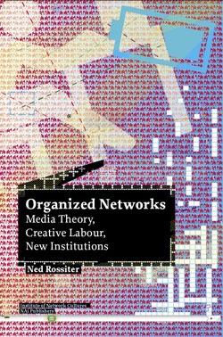
Studies in Network Cultures
Organized Networks, Ned Rossiter
Ned Rossiter, Organized Networks: Media Theory, Creative Labour, New Institutions, NAi Publishers, Rotterdam and the Institute of Network Cultures, Amsterdam, 2006. ISBN 90-5662-526-8. Paperback, sewn, 250 pages, Size: 16 x 23 cm. € 23.50 | Buy the bookINC Reader
Geert Lovink and Soenke Zehle (eds.), Incommunicado Reader, Amsterdam: Institute of Network Cultures, 2005. ISBN: 90-78146-01-X. | Download PDF
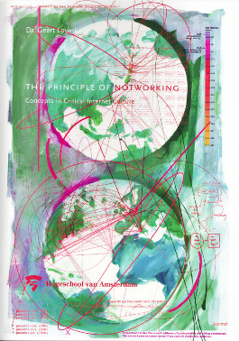
Geert Lovink's Books
The Principle of Notworking, Geert Lovink
Geert Lovink, The Principle of Notworking: Concepts in Critical Internet Culture, Amsterdam: Amsterdam University Press, 2005. | Download PDF
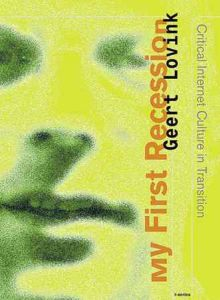
Geert Lovink's Books
My First Recession, Geert Lovink
Geert Lovink, My First Recession: Critical Internet Culture in Transition, Rotterdam: V2_NAi Publishers, 2003. ISBN: 90-5662-353-2. | Buy the book
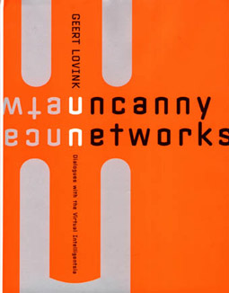
Geert Lovink's Books
Uncanny Networks, Geert Lovink
Geert Lovink, Uncanny Networks: Dialogues with the Virtual Intelligentsia, Cambridge: MIT Press, 2002. ISBN: 0262621878. Paperback, 390 pages | Buy the bookGeert Lovink's Books
Geert Lovink, Dark Fiber: Tracking Critical Internet Culture, Cambridge: MIT Press, 2002. ISBN: 0262621800. Paperback, 394 pages. | Buy the book